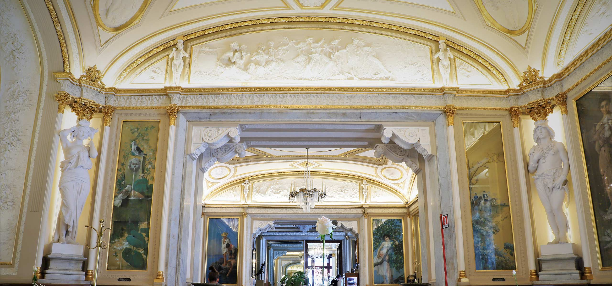
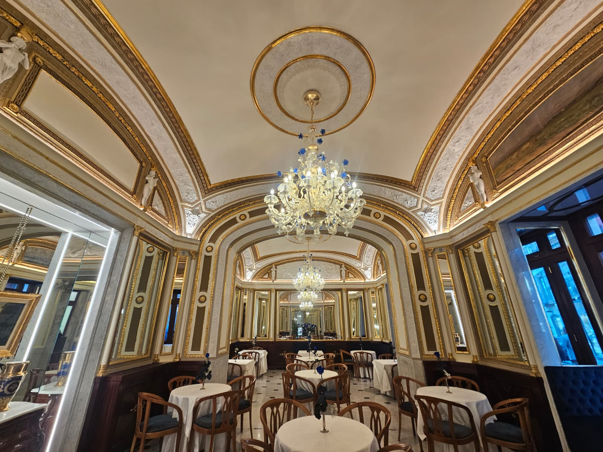
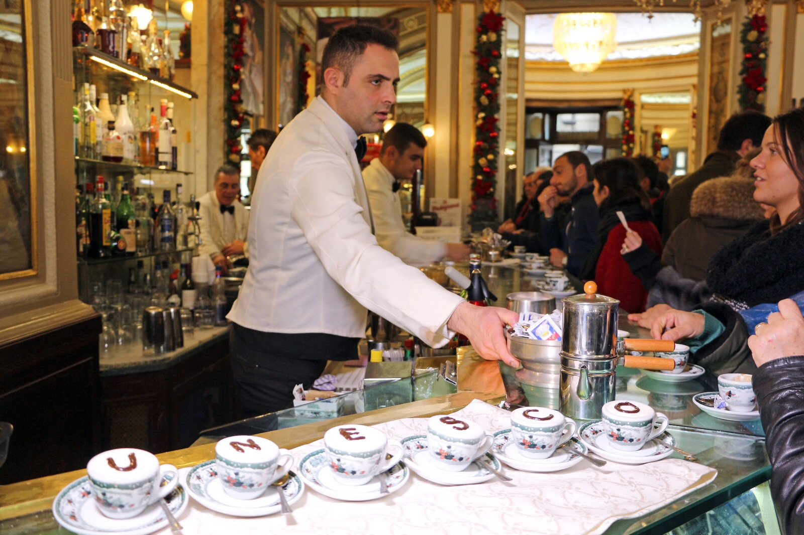
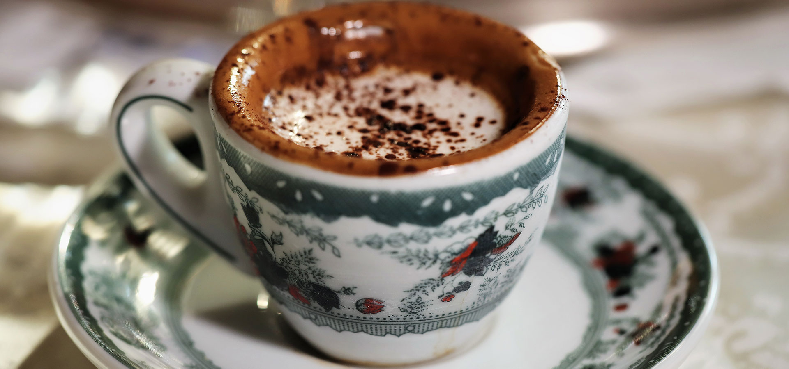
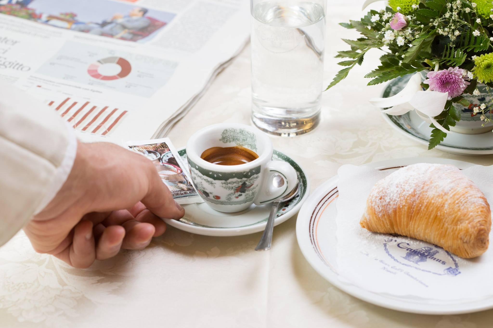
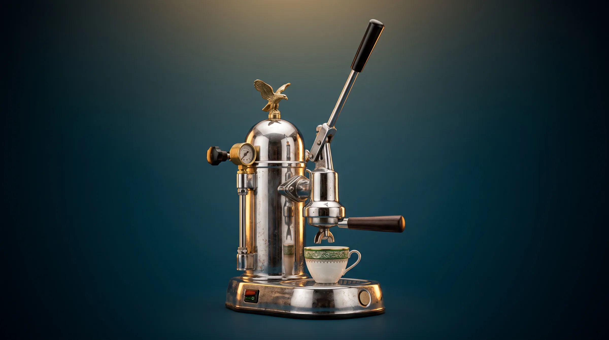
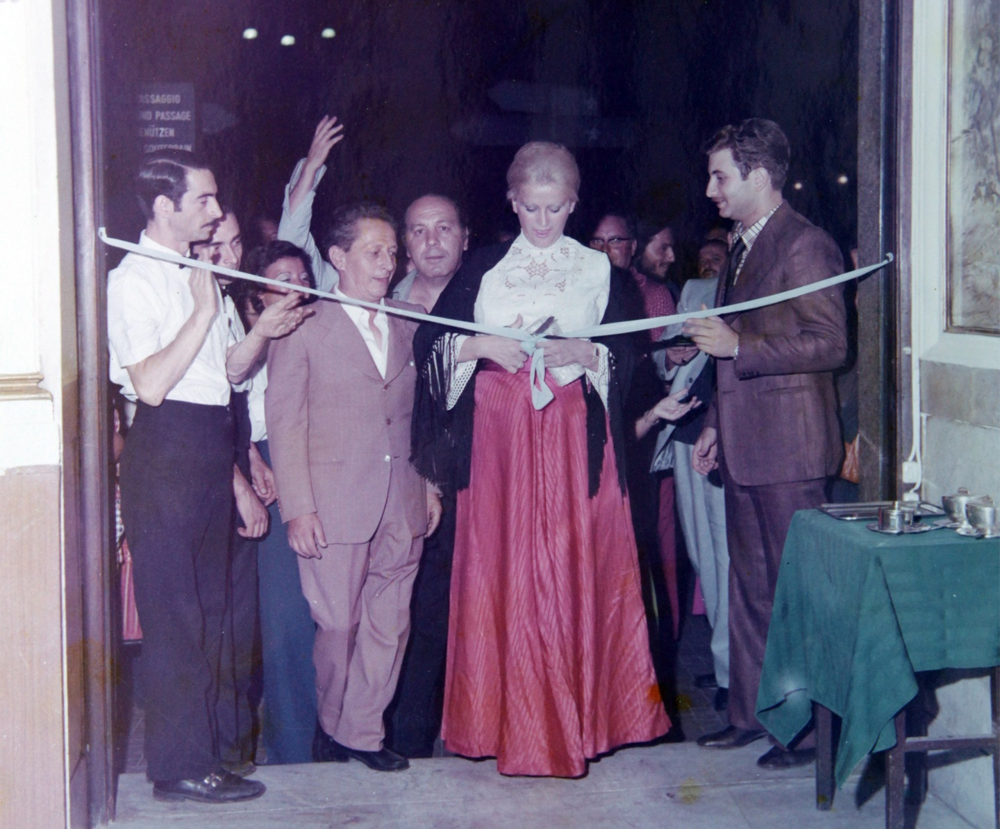

Gran Caffè
Gambrinus
Napoli · Piazza Trieste e Trento · dal 1860
Scorri per entrare
Benvenuti
Il salotto
di Napoli.
Tra il Palazzo Realee il San Carlo,un banco.
Dal 1860 il Gambrinus accoglie Napoli al piano terra del Palazzo della Foresteria. Nel 1890 l'architetto Antonio Curri firma il rinnovamento delle sale: il 3 novembre il Gambrinus si presenta alla città.
1860Il primo caffè servito
1890Le sale di Antonio Curri
1973La famiglia Sergio riapre le porte
Dentro
Ogni giorno,dal 1860.

Sala degli Specchi
Restituita nel 2025
Il banco
Dove si tira la leva
La tazzina
Servita bollente
Il tavolino
Caffè e giornale

La famiglia
Dal 1973,una famigliaper le sue sale.
Michele Sergio, con i figli Arturo e Antonio e il genero Giuseppe Rosati, rileva il Gambrinus e comincia a restituirgli le sale perdute.
La storia